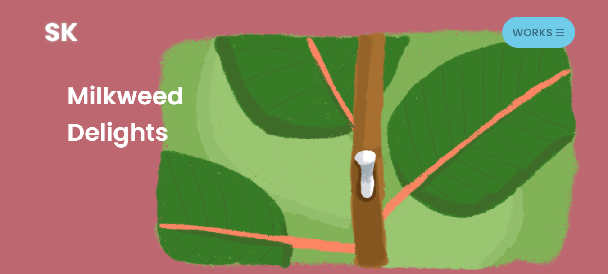
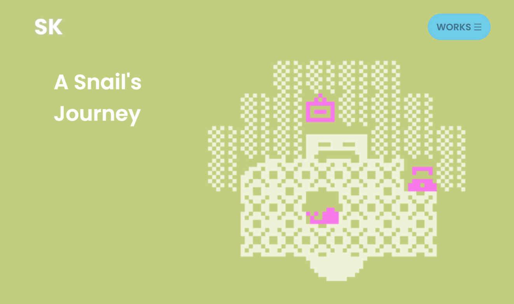
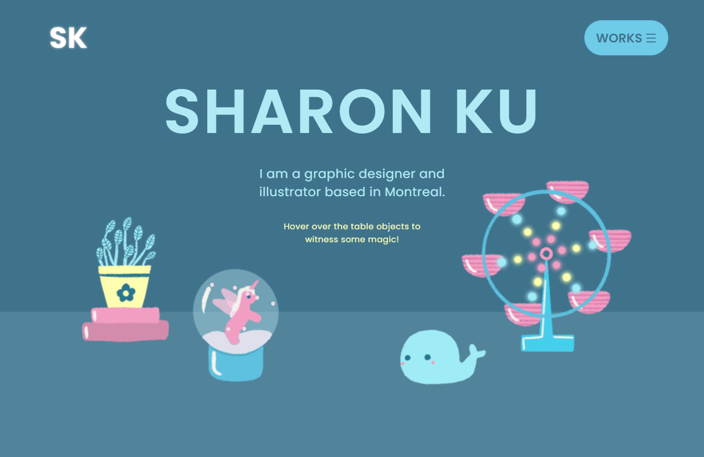

This is the website you are looking at! Using HTML, CSS, and JavaScript's p5.js library, I focused on optimizing user experience by carefully laying out the elements on the page. For instance, at the bottom of each "works" page, there is a large clickable button that can bring the user to the next work. I used bold colors and large images to highlight my artworks.


The table objects on the index page were drawn digitally in Procreate. I infused my personality in these objects and programmed them to be interactive. I think that interactivity is an important component in web design since it is a creative way of engaging with users.
